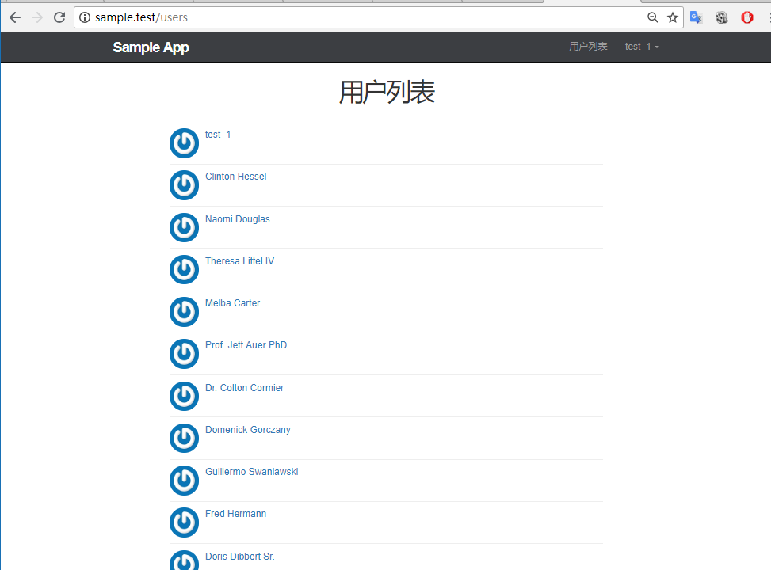

列出所有用户
用户列表
根据我们前面使用 resource 方法生成符合 RESTful 架构的路由可知, 用户列表对应用户控制器的 index 动作, 页面 URL 对应 /users 接下来我们将在用户控制器中加入 index 动作, 并且因为用户列表的访问权限是公开的, 所以我们还需要在 Auth 中间件中添加 except 中新增 index 动作来允许游客访问
app/Http/Controllers/UsersController.php
<?php
namespace App\Http\Controllers;
.
.
.
class UsersController extends Controller
{
public function __construct()
{
$this->middleware('auth', [
'except' => ['show', 'create', 'store', 'index']
]);
.
.
.
}
public function index()
{
$users = User::all();
return view('users.index', compact('users'));
}
.
.
.
}
可以看到在 index 方法中 我们使用 Eloquent 用户 模型所有用户的数据就一下子展现出来了, 这么做会影响应用的性能, 后面我们再对性能进行优化, 通过分页的方式来读取用户数据, 在将用户数据取出后, 与 index 视图进行绑定, 这样便可以在视图中使用 $users 来访问所有用户实例
接下来让我们继续创建 index 视图, 用于显示所有用户列表的信息
resources/views/users/index.blade.php
@extends('layouts.default')
@section('title', '所有用户')
@section('content')
<div class="col-md-offset-2 col-md-8">
<h1>所有用户</h1>
<ul class="users">
@foreach ($users as $user)
<li>
<img src="{{ $user->gravatar() }}" alt="{{ $user->name }}" class="gravatar"/>
<a href="{{ route('users.show', $user->id) }}" class="username">{{ $user->name }}</a>
</li>
@endforeach
</ul>
</div>
@stop
我们使用 foreach 的方法将所有用户的数据逐个输出, 并在页面上显示他们的头像和用户名
对用户列表视图进行样式优化
resources/assets/sass/app.scss
.
.
.
/* Users index */
.users {
list-style: none;
margin: 0;
padding-left: 0;
li {
overflow: auto;
padding: 10px 0;
border-bottom: 1px solid $gray-lighter;
}
}
现在用户列表已经可以访问了, 我们对导航栏进行编辑
resources/views/layouts/_header.blade.php
<header class="navbar navbar-fixed-top navbar-inverse">
<div class="container">
<div class="col-md-offset-1 col-md-10">
<a href="/" id="logo">Sample App</a>
<nav>
<ul class="nav navbar-nav navbar-right">
@if (Auth::check())
<li><a href="{{ route('users.index') }}">用户列表</a></li>
<li class="dropdown">
<a href="#" class="dropdown-toggle" data-toggle="dropdown">
{{ Auth::user()->name }} <b class="caret"></b>
</a>
<ul class="dropdown-menu">
<li><a href="{{ route('users.show', Auth::user()->id) }}">个人中心</a></li>
<li><a href="{{ route('users.edit', Auth::user()->id) }}">编辑资料</a></li>
<li class="divider"></li>
<li>
<a id="logout" href="#">
<form action="{{ route('logout') }}" method="POST">
{{ csrf_field() }}
{{ method_field('DELETE') }}
<button class="btn btn-block btn-danger" type="submit" name="button">退出</button>
</form>
</a>
</li>
</ul>
</li>
@else
<li><a href="{{ route('help') }}">帮助</a></li>
<li><a href="{{ route('login') }}">登录</a></li>
@endif
</ul>
</nav>
</div>
</div>
</header>
做完上面的工作之后, 用户列表已经可以正常使用了, 但是现在还有两个问题
- 注册用户太少
- 用户列表不支持分页
实例用户
在实际开发中, 我们经常会用一些截数据来进行调试, 原始的做法是手工输入, laravel 提供了一套更加现代化的东西, 接下来我们使用 laravel 提供的数据来批量生成假用户
假数据的生成分为两个阶段:
- 对要生成假数据的模型指定字段进行赋值 ,模型工厂
- 批量生成假数据 数据填充
模型工厂
laravel 默认为我们集成了 Faker 扩展包, 使用该扩展包可以让我们很方便生成一些假数据
示例如下
// 使用 factory 来创建一个 Faker\Generator 实例
$faker = Faker\Factory::create();
// 生成用户名
$faker->name; // "Janie Roob"
// 生成安全邮箱
// 生成随机日期
$faker->date // "2011-02-10"
// 生成随机时间
$faker->time // "13:03:55"
我们可以借助 Faker 和 Eloquent 模型工厂来为指定模型的每个字段设置随机值
本项目生成的模型工厂:
<?php
use Faker\Generator as Faker;
/*
|--------------------------------------------------------------------------
| Model Factories
|--------------------------------------------------------------------------
|
| This directory should contain each of the model factory definitions for
| your application. Factories provide a convenient way to generate new
| model instances for testing / seeding your application's database.
|
*/
$factory->define(App\Models\User::class, function (Faker $faker) {
static $password;
return [
'name' => $faker->name,
'email' => $faker->unique()->safeEmail,
'password' => $password ?: $password = bcrypt('secret'),
'remember_token' => str_random(10),
];
});
define 定义了一个制定数据模型( 例如例子 User )的,模型工厂, define 方法接收两个参数, 第一个参数为指定的 Eloquent 模型, 第二个参数为一个闭包函数, 该闭包函数接收一个 Faker PHP 函数库的实例, 让我们可以在函数内部使用 Faker 方法来生成假数据并为模型的指定字段赋值
让我们对生成的模型工厂进行修改
database/factories/UserFactory.php
<?php
use Faker\Generator as Faker;
/*
|--------------------------------------------------------------------------
| Model Factories
|--------------------------------------------------------------------------
|
| This directory should contain each of the model factory definitions for
| your application. Factories provide a convenient way to generate new
| model instances for testing / seeding your application's database.
|
*/
$factory->define(App\Models\User::class, function (Faker $faker) {
$date_time = $faker->date . ' ' . $faker->time;
static $password;
return [
'name' => $faker->name,
'email' => $faker->safeEmail,
'password' => $password ?: $password = bcrypt('secret'),
'remember_token' => str_random(10),
'created_at' => $date_time,
'updated_at' => $date_time,
];
});
我们使用生成的加日期对用户的创建时间和更新时间进行赋值
数据填充
在 laravel 中我们使用 Seeder 类来给数据库填充测试数据, 所有的 Seeder 类文件都放在 database/seeds 目录下, 文件名按照 驼峰式 来命名, 且严格遵守大小写规范, laravel 默认为我们定义了一个 DatabaseSeeder 类, 我们可以在该类中使用 call 方法来运行其他的 Seeder 类, 以此控制数据填充的顺序, 我们可以使用下面的命令来生成一个 UsersTableSeeder 文件, 用于填充用户相关的假数据
$ php artisan make:seeder UsersTableSeeder
在我们定义好了用户模型工厂之后, 便可以在生成的用户数据填充文件中使用 factory 这个辅助函数来生成一个使用假数据的用户对象
现在让我们使用该方法来创建 50 个假数据
database/seeds/UsersTableSeeder.php
<?php
use Illuminate\Database\Seeder;
use App\Models\User;
class UsersTableSeeder extends Seeder
{
/**
* Run the database seeds.
*
* @return void
*/
public function run()
{
$users = factory(User::class)->times(50)->make();
User::insert($users->makeVisible(['password', 'remember_token'])->toArray());
$user = User::find(1);
$user->name = 'Aufree';
$user->password = bcrypt('password');
$user->save();
}
}
times 和 make 方法是 FactoryBuilder 类提供的 API , times 接收一个参数用于指定创建的模型数量, make 方法调用后将为模型创建一个集合, makeVisible 方法临时显示 User 模型里指定的隐藏属性,$hidden , 接着我们使用了 insert 方法来将假数据批量插入到数据库中, 最后我们还对第一位用户的信息进行跟新, 方便我们之后的使用
接着我们还要在 DatabaseSeeder 中调用 call 方法来指定我们需要运行假数据填充的文件
database/seeds/DatabaseSeeder.php
<?php
use Illuminate\Database\Seeder;
use Illuminate\Database\Eloquent\Model;
class DatabaseSeeder extends Seeder
{
/**
* Run the database seeds.
*
* @return void
*/
public function run()
{
Model::unguard();
$this->call(UsersTableSeeder::class);
Model::reguard();
}
}
完成上面的操作之后, 我们便可以为用户批量生成假数据了, 我们需要使用 migrate:refresh 命令来重置数据库, 之后在使用 db:seed 执行数据填充
$ php artisan migrate:refresh
$ php artisn db:seed
如果我们要单独指定执行 UsersTableSeeder 数据填充文件, 可以这么做
$ php artisan migrate:refresh
$ php artisan db:seed --class=UsersTableSeeder
你也可以使用下面一条命令完成数据库的重置和填充操作
$ php artisna migrate:refresh --seed

分页
现在我们已经拥有了足够多的用户了, 接下来让我们着手开发用户列表页面和分页功能, 在 laravel 应用中, 分页功能的开发十分简单, 接下来让我们看下具体如何实现,\
首先, 我们需要对用户控制器中获取所有用户数据的方法进行更改,
app/Http/Controllers/UsersController.php
<?php
namespace App\Http\Controllers;
.
.
.
class UsersController extends Controller
{
.
.
.
public function index()
{
$users = User::paginate(10);
return view('users.index', compact('users'));
}
.
.
.
默认状态下, 页面的当前页数由 HTTP 请求所带的 page 参数决定, 当你访问 http://sample.test/users?page=2? 链接时, 获取的是第二页的用户列表信息, laravel 会自动检测到 page 的值并插入由分页器生成的链接中, 在上面代码中我们使用 paginate 方法来指定麽每页生成的数据数量为10, 当我们这50个数据由5页展示
在调用 paginate 方法获取用户列表之后, 便可以通过以下代码在用户列表页上渲染分页链接
{!! $users->render() !!}
由 render 方法生成的 HTMl 代码默认会使用 Bootstrap 框架, 渲染出来的视图也会统一带 ?page 参数来设置指定页数的链接. 另外还需要注意的一点就是, 渲染分页视图的代码必须使用 {!!!!} 语法, 而不是{{}} , 这样生成的 html 链接才不会被转义
让我们对用户列表页视图进行修改, 加上渲染分页视图的代码
resources/views/users/index.blade.php
@extends('layouts.default')
@section('title', '所有用户')
@section('content')
<div class="col-md-offset-2 col-md-8">
<h1>所有用户</h1>
<ul class="users">
@foreach ($users as $user)
<li>
<img src="{{ $user->gravatar() }}" alt="{{ $user->name }}" class="gravatar"/>
<a href="{{ route('users.show', $user->id )}}" class="username">{{ $user->name }}</a>
</li>
@endforeach
</ul>
{!! $users->render() !!}
</div>
@stop

使用局部视图重构
为了对视图模块进行细分, 使目录结构更好理解, 接下来对列表页进行重构, 将单个用户视图抽离成一个完整的局部视图. 首先我们引入用户局部视图到用户列表上
resources/views/users/index.blade.php
@extends('layouts.default')
@section('title', '所有用户')
@section('content')
<div class="col-md-offset-2 col-md-8">
<h1>所有用户</h1>
<ul class="users">
@foreach ($users as $user)
@include('users._user')
@endforeach
</ul>
{!! $users->render() !!}
</div>
@stop
接着对用户局部视图进行创建
resources/views/users/_user.blade.php
<li>
<img src="{{ $user->gravatar() }}" alt="{{ $user->name }}" class="gravatar"/>
<a href="{{ route('users.show', $user->id )}}" class="username">{{ $user->name }}</a>
</li>